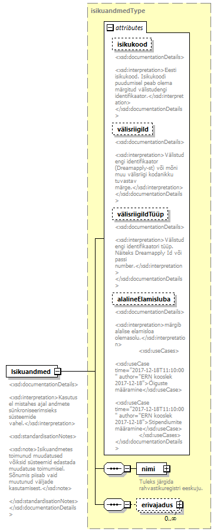

| diagram |  | ||||||||||||||||||||||||||||||||||||||
| namespace | http://www.ern.ee/õpe | ||||||||||||||||||||||||||||||||||||||
| type | isikuandmedType | ||||||||||||||||||||||||||||||||||||||
| properties |
|
||||||||||||||||||||||||||||||||||||||
| children | nimi erivajadus | ||||||||||||||||||||||||||||||||||||||
| attributes |
|
||||||||||||||||||||||||||||||||||||||
| annotation |
|
||||||||||||||||||||||||||||||||||||||
| source | <xs:element name="Isikuandmed" type="isikuandmedType"> <xs:annotation> <xs:documentation> <xsd:documentationDetails> <xsd:interpretation>Kasutusel mistahes ajal andmete sünkroniseerimsieks süsteemide vahel.</xsd:interpretation> <xsd:standardisationNotes> <xsd:note>Isikuandmetes toimunud muudatused võiksid süsteemid edastada muudatuse toimumisel. Sõnumis piisab vaid muutunud väljade kasutamisest.</xsd:note> </xsd:standardisationNotes> </xsd:documentationDetails> </xs:documentation> </xs:annotation> </xs:element> |